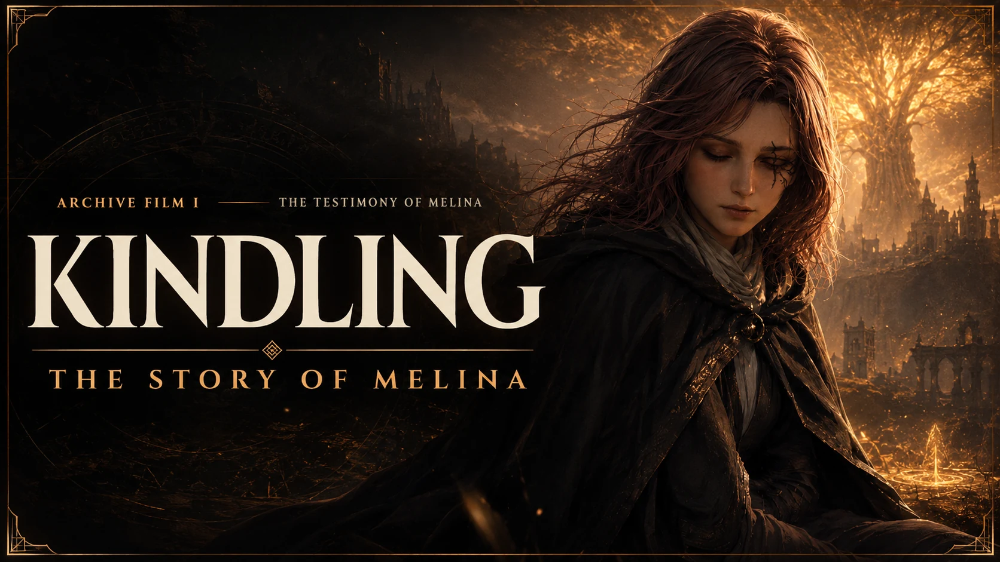

KINDLING
The Story of Melina
“I was made for a purpose. I became a person when I chose what that purpose meant.”
From a graveyard beneath Limgrave to the Forge of the Giants, Melina tells the journey in her own voice—not as the maiden who burned, but as the person who learned to choose.

WHERE HER STORY BEGAN.
The film is being forged. The complete written edition is already waiting below.
The tragedy is not to be made for a purpose. The tragedy is to live and die as someone else’s unread letter.
The story in nine movements
The film and the written edition share one spine. Read straight through, or enter at the moment still burning in your memory.
Opening the record…
Carry the story back into the world.
KINDLING is one door. The Archive keeps the build, the road, the weapons, and the histories on the other side.
Six armament slots, armor, spells, Ashes, exact combat events, and live enemy context.
Enter the Full Build Lab → JourneyWalk the Lands BetweenQuest fail-triggers, bosses, endings, and a complete base-game-to-DLC route.
Open the Tarnished Path → LoreRead what survivedGold and Shadow, KINDLING, and The Testament of Ranni—≈99,800 words in a persistent reader.
Enter the Tales →